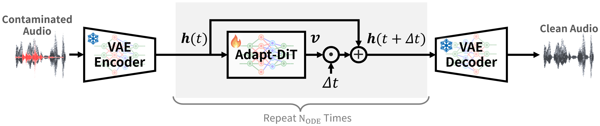
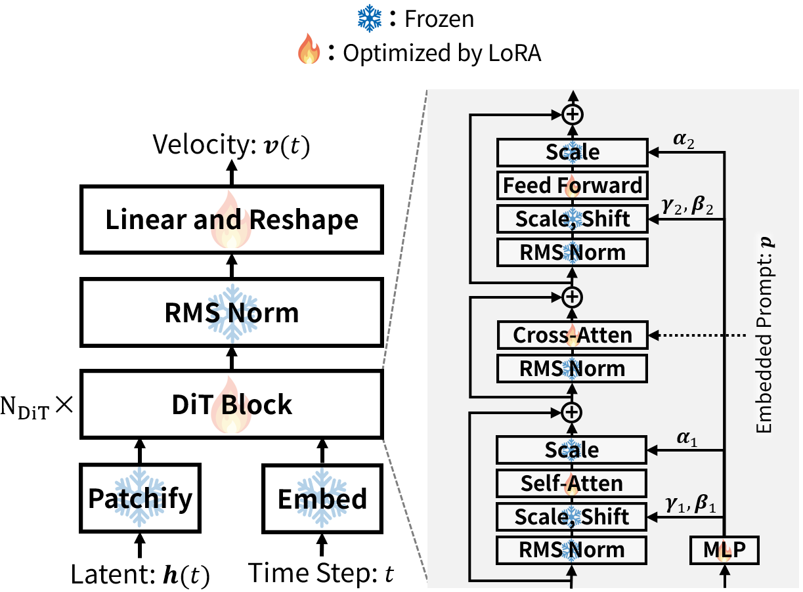
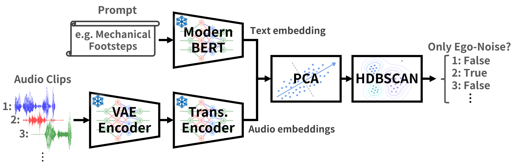

Introduction
Ego-noise separation is a fundamental capability for legged robot audition. When a robot walks, its motors, joints, foot contacts, and body vibration can dominate the onboard microphones, making it difficult to recognize surrounding sounds. This project studies how a robot can mine its own ego-noise from unlabeled recordings and adapt an audio separator for downstream zero-shot sound classification.
Proposed Method




Overall Evaluation
We evaluate ego-noise separation on ESC-50 environmental sounds mixed with robot ego-noise from Unitree G1 and Unitree Go1 at -6, 0, and +6 dB SNR. After separation, a PE-AV small zero-shot classifier predicts one of 50 ESC-50 classes from the separated environmental sound. Tables report mean scores by method, robot, and SNR; the best value in each robot-SNR column is shown in bold.
Demo: Zero-Shot Sound Classification After Ego-Noise Separation
Each set shows references first, followed by separated target estimates from each method.
CLAP Score is the CLAP audio embedding cosine similarity between the target and the separated estimate. SAJ Score is the overall separation judgment score. Higher is better.